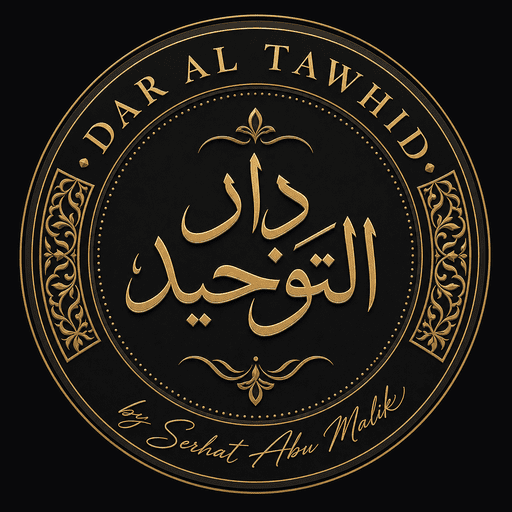
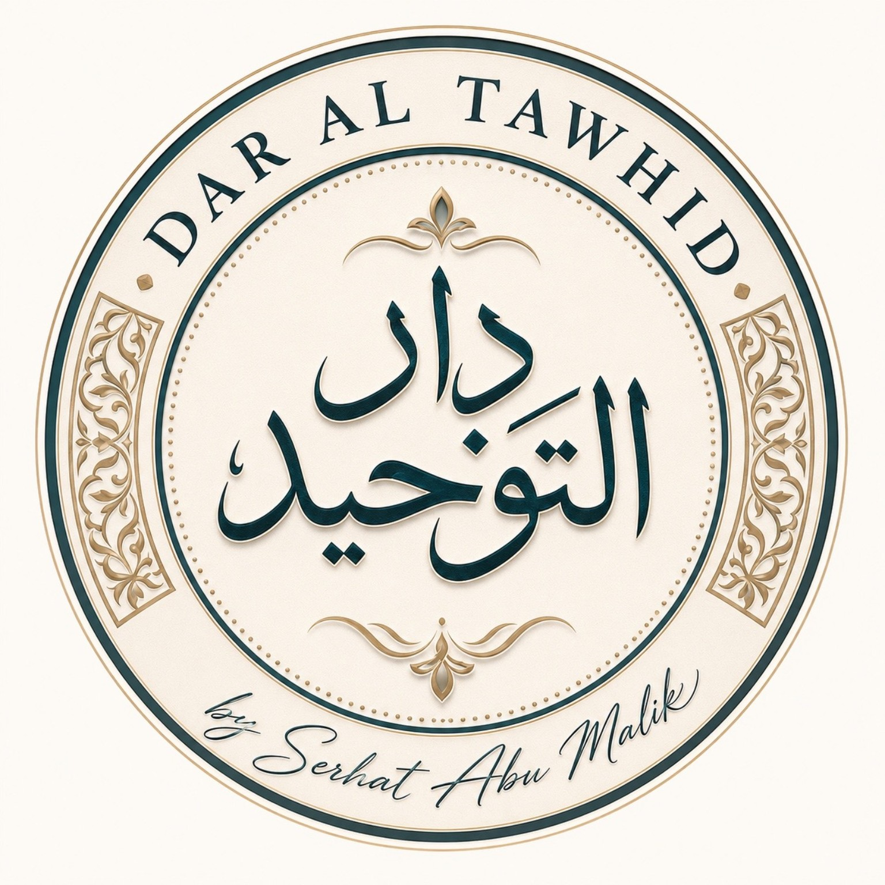
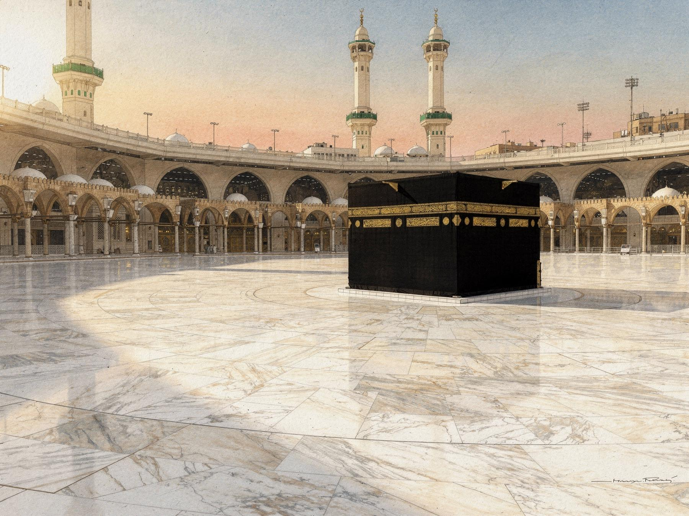
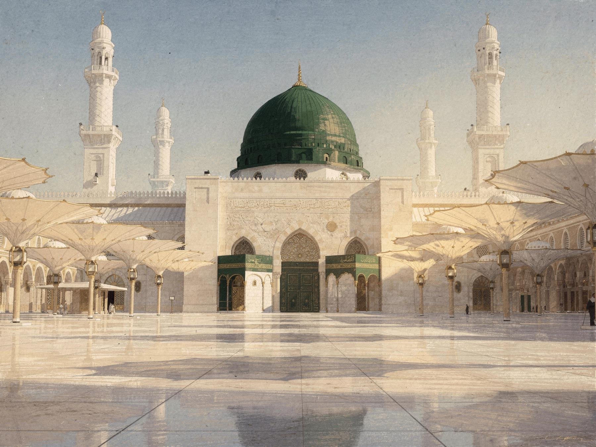

Meine
ʿUmrah
Ein Reisebegleiter und Erinnerungsbuch über die besonderen Momente unseres Weges.


Unser Weg
zur ʿUmrah
Dieses Buch hält den Weg der ʿUmrah in Wort und Bild fest: von der Vorbereitung und dem Ihrām über die Begegnung mit der Kaʿbah bis zu den persönlichen Erinnerungen, die bleiben. Es erzählt nicht nur, wo wir waren, sondern lässt Platz für das, was uns an diesen Orten bewegt hat.
Bevor der Weg
beginnt
Jede Reise beginnt mit einem Entschluss. Die ʿUmrah beginnt mit einer Absicht, die Allah gewidmet ist.
Auf die Vorbereitung folgt der Eintritt in den Ihrām am vorgesehenen Mīqāt. Die Talbiyah begleitet den Pilger auf dem Weg nach Makkah. Hier kann festgehalten werden, wann und wie die Reise begann und welche Gedanken diesen ersten Abschnitt prägten.
Makkah
Der Blick auf die Kaʿbah. Eine Begegnung, die einen besonderen Platz in der Erinnerung erhält.
Die ersten
Momente
Im Zentrum der Heiligen Moschee steht die Kaʿbah. Erinnerungen von der Ankunft, den Wegen zum Ḥaram und den persönlichen Eindrücken dieser Begegnung gehören hierher. Jeder eingefügte Augenblick wird mit seinem eigenen Ort und einer kurzen Beschreibung aufgenommen.
Sieben
Umrundungen
Der Ṭawāf gehört zu den zentralen Handlungen der ʿUmrah.
Die Kaʿbah wird siebenmal umrundet. Diese Seite sammelt die Erinnerungen an diesen Teil der Reise: den Beginn, die Atmosphäre und die Gedanken, die man bewahren möchte. Sie ersetzt keine Anleitung zu den religiösen Vorschriften.
Schritte des
Vertrauens
Ṣafā und Marwah gehören zu den Zeichen Allahs.
Der Saʿy wird auf sieben Wegstrecken zwischen Ṣafā und Marwah vollzogen. Der Abschnitt erinnert an Hāǧar und ihren Weg. Neben den Stationen finden persönliche Notizen, Fotos und stille Erinnerungen ihren Platz.
Madīnah
Die Stadt des Propheten ﷺ. Ein eigener Abschnitt der Reise – unabhängig von den Riten der ʿUmrah.
Tage in
Madīnah
Die Prophetenmoschee und ihre weiten Höfe prägen das Bild von Madīnah. Ein Besuch dieser Stadt ist keine Voraussetzung und kein Bestandteil der ʿUmrah-Riten. Wer Madīnah besucht hat, kann hier seine eigenen Eindrücke und Bilder bewahren.
Ihre Erinnerungen bleiben.
Möge Allah unsere ʿUmrah annehmen und uns die Möglichkeit geben, die heiligen Stätten erneut zu besuchen.
Ein persönliches Erinnerungsbuch
DĀR AL TAWḤĪD · Illustrationen sind künstlerische Darstellungen, keine Fotografien.